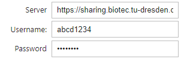

Optional: Accessing image files in the owncloud#
This notebook we will demonstrate how to download files from an owncloud server. More detailed example code is available here.
Important note: NEVER save your passwords in Python code.
Before we can execute the code, we may have to install a Python library for working with the owncloud, such as pyocclient.
!pip install pyocclient
import ipywidgets as widgets
import owncloud
Login#
After executing the next cell locally, you will see three input fields where you can enter the server url, username and password.

server_widget = widgets.Text(value='https://datashare.zih.tu-dresden.de', description='Server')
username_widget = widgets.Text(description='Username:')
password_widget = widgets.Password(description='Password')
widgets.VBox([server_widget, username_widget, password_widget])
Do NOT hit Shift-Enter after entering username and password
if username_widget.value == '':
raise RuntimeError('Enter username and password above')
oc = owncloud.Client(server_widget.value)
oc.login(username_widget.value, password_widget.value)
A typical error message is 401: Access denied. Check your username and password.
# For safety reasons we reset the password now, after we logged in successfully.
password_widget.value = ""
Browsing the remote server#
To see if the connection was successful, we can just list the files in a given folder.
# enter a folder on the owncloud drive that exists. '/' is the root folder.
remote_folder = "/"
for f in oc.list(remote_folder):
print (f.path)
/BiAPoL/
/Documents/
/Nextcloud Manual.pdf
/Nextcloud intro.mp4
/Nextcloud.png
/Photos/
/Projects/
/Shared/
/Software/
Retrieving a file#
We can download a file to a local directory.
# enter the source file here
remote_source_file = '/Nextcloud Manual.pdf'
# enter the destination
local_file = 'Nextcloud Manual.pdf'
oc.get_file(remote_path=remote_source_file,
local_file=local_file)
True
The PDF is now located in the same folder as this notebook.
Exercise#
Can you also download Nextcloud.png using Python code?